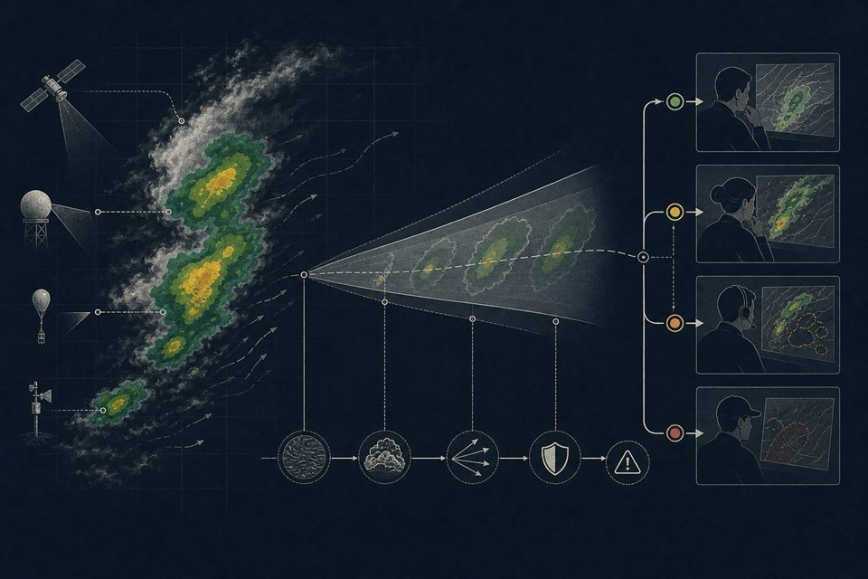

Sanitized visual summaryWeather intelligence | Program leadership
ISRO Storm Nowcasting
Led operational weather intelligence used in launch director reviews, coordinating technical inputs into timely, decision-ready guidance. Model evaluation reached 97.5% accuracy with a 5% false alarm rate across 15-minute to two-hour horizons.